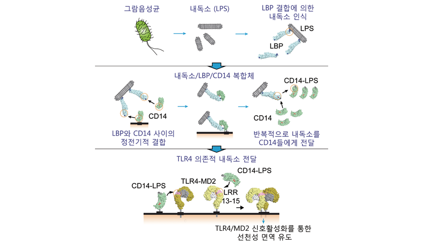

KAIST Top 10
KAIST Top 10
KAIST RESEARCH ACHIEVEMENTS
Dynamic LPS Transfer Mechanism for Innate
Immune Activation
Graduate School of Medical Science and Engineering
Ho Min Kim
Summary
Lipopolysaccharide (LPS), the major component of the outer membrane of Gram-negative bacteria, binds Toll-like receptor 4 (TLR4)-MD2 complex and activates innate immune responses. LPS transfer to TLR4-MD2 is catalyzed by both LPS binding protein (LBP) and CD14. To define the sequential molecular interactions underlying this transfer, we reconstituted in vitro the entire LPS transfer process from LPS micelles to TLR4-MD2. Using electron microscopy and single-molecule approaches, we characterized the dynamic intermediate complexes for LPS transfer – LBP-LPS micelles, CD14-LBP-LPS micelle and CD14-LPS-TLR4-MD2 complex. A single LBP molecule bound longitudinally to LPS micelles catalyzed multi-rounds of LPS transfer to CD14s that rapidly dissociated from LPB-LPS complex upon LPS transfer via electrostatic interactions. Subsequently, the single LPS molecule bound to CD14 was transferred to TLR4-MD2 in TLR4-dependent manner. The definition of the structural determinants of the LPS transfer cascade to TLR4 may enable the development of targeted therapeutics for intervention in LPS-induced sepsis.
Background
Lipopolysaccharide (LPS), also called endotoxin, is the major component of the outer membrane of Gram-negative bacteria. Transfer of LPS to pattern-recognition receptor complexes, TLR4/MD2, constitutes one of the critical steps in the recognition of a pathogen-associated molecular pattern (PAMP) of Gram-negative bacteria.
The accessory proteins, LBP and CD14, mediate this LPS transfer, which eventually leads to induction of innate immune responses for helping clearance of bacterial infections. Although the crystal structures of the LBP, CD14 and TLR4/MD2 have been characterized last decade, they are by definition static snapshots of proteins with important dynamic in vivo interactions. The transient nature of these interactions is advantageous for a rapid immune response, but has made it difficult to elucidate the molecular structures of intermediate complexes in the LPS recognition/transfer cascade.
 Fig. 1. Lipopolysaccharide (LPS) of Gramnegative bacteria activates host innate immune responses
Contents
In order to uncover the detailed molecular mechanisms underlying the entire process of dynamic LPS transfer, this study used two advanced biophysical techniques -transmission electron microscopy and single molecule fluorescence analysis. With negative-stain TEM analysis, dynamic intermediate complexes comprising LBP/LPS micelles and ternary CD14/LBP/LPS micelle complexes can be visualized directly. In addition, we developed a novel fluorescence assays using a total internal reflection (TIRF) microscope to quantitatively monitor the dynamic interactions during the entire LPS transfer to TLR4/MD2. With a combination of these tools, we revealed the following: 1) LBP binds longitudinally to the surface of LPS micelles via its N-terminal basic tip. 2) CD14 then binds to a LBP/LPS micelle complexes with a nanomolar affinity, and rapidly dissociates from the LBP/LPS complex after immediate LPS transfer. An electrostatic switch in the LBP C-terminal domain and the CD14 concave surface is responsible for this Janus-like binding and unbinding of CD14 to LBP/LPS micelle complexes. 3) LBP remains bound to the LPS micelle, directing multiple rounds of LPS transfer to many different CD14 proteins. 4) Finally, the single LPS molecule bound to CD14 is transferred to the TLR4/MD2 complex, which is mediated by the TLR LRR13-15 domains. Remarkably, these LRR 13-LRR15 domains include the well-known site of a TLR4 single nucleotide polymorphism (T399I) of human, that is known to reduce LPS responsiveness.
Expected effect
- Our integrative investigation of the dynamic intermediates that form during entire LPS transfer process revealed an unprecedented level of detail into how LPS molecules are recognized and transferred to initiate the innate immune response. Not only that, these provide a blueprint for future therapeutic strategies by modulating LPS transfer to TLR4/MD2.
Research Funding
his work was supported by grants from the National Research Foundation of Korea (NRF), Ministry of Science and ICT, Korea (NRF-2015R1A2A2A01005533 and NRF-2015R1A4A1042416)
Research
[Paper] Ryu JK and Kim SJ et al., Reconstruction of LPS Transfer Cascade Reveals Structural Determinants within LBP, CD14, and TLR4-MD2 for Efficient LPS Recognition and Transfer. Immunity, 46(1):38-50. doi: 10.1016/j.immuni.2016.11.007 (2017)
[Prize] Prize for Academic Excellence, Korean Society for Structural Biology (2017)